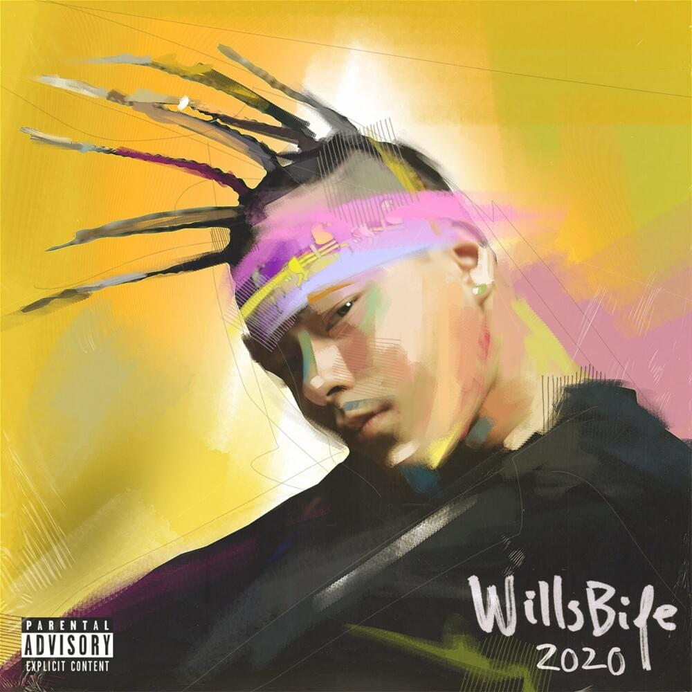

Escute agora!
Willsbife - Balançar
Feat. Flora Matos
Febre Amarela é o disco produzido pelo coreano Willsbife. Com produções voltadas para o trap, o disco impressiona pela criatividade.
Ouça agora

Febre Amarela é o disco produzido pelo coreano Willsbife. Com produções voltadas para o trap, o disco impressiona pela criatividade.
Ouça agoraCom seu dom para compor músicas melancólicas e ricas em cultura brasileira, Tim Maia foi o estopim para outros artistas do gênero MPB.
Ouça agoraCom letras e clipes que ultrapassam a utopia, After Hours foi um dos grandes sucessos do canadense The Weeknd.
Ouça agora